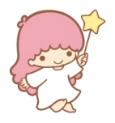

- Birthday: December 24th(Christmas Eve)
- Gender: Male
- Species: Mythical Creature

- Birthday: December 24th(Christmas Eve)
- Gender: Female
- Species: Mythical Creature

Little Twin Stars, Kiki and Lala, are beloved characters from Sanrio, introduced in 1975. They are two angelic siblings who come from the Starry Sky and have a dreamy, celestial theme. Their sweet and innocent personalities, along with their star-filled aesthetic, have made them enduring favorites among Sanrio fans.
Kiki has short, light blue hair and usually wears a light blue outfit. He carries a yellow star wand that reflects his curious and adventurous nature. Kiki is the younger twin and is very energetic, curious, and always dreaming of becoming a great star someday. He loves inventing things and exploring, making him the more adventurous of the two.
Lala has long, curly, light pink hair and often wears a flowing pink dress. She holds a star-tipped staff and embodies grace and kindness. Lala, the older sister, is gentle, caring, and responsible. She enjoys drawing, writing poems, and cooking. Her nurturing nature means she often looks after her younger brother, Kiki, and keeps him out of trouble.